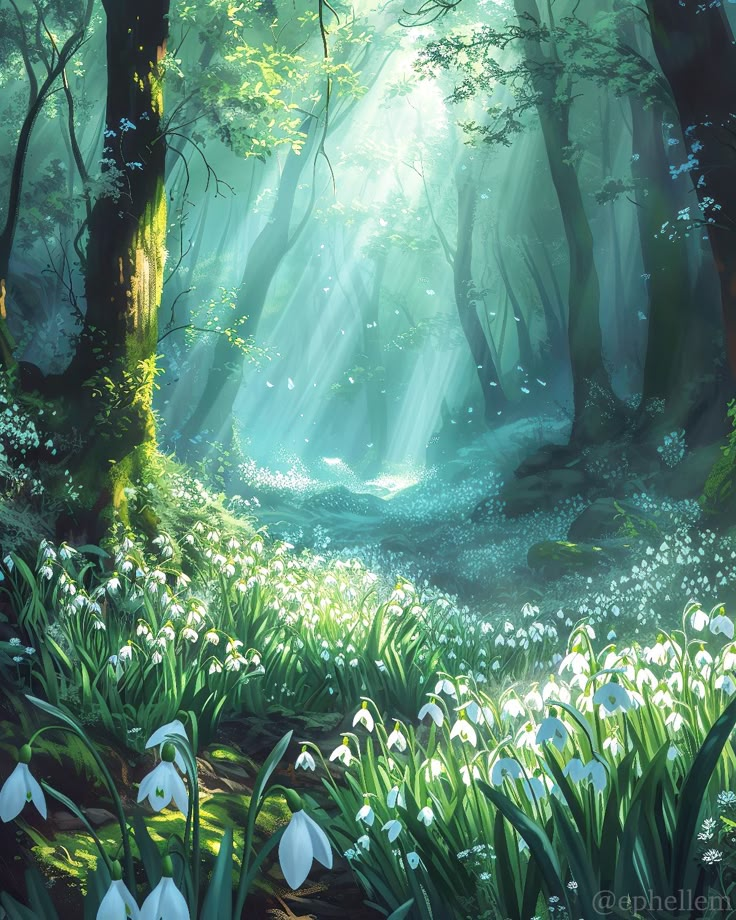

About Me
Ayu Safitri
Saya adalah seorang siswa yang berdedikasi dan bersemangat di SMKN 24 Jakarta, jurusan Rekayasa Perangkat Lunak. Saya memiliki ketertarikan yang mendalam dalam bidang teknologi informasi, khususnya dalam pengembangan perangkat lunak dan aplikasi web. Selama studi saya, saya telah terlibat dalam berbagai proyek yang menantang yang telah membantu saya mengembangkan keterampilan teknis dan kemampuan problem-solving.

Hobi
- Mengoding dan mempelajari bahasa pemrograman baru.
- Main game seperti mobile legends dan roblox hehe.
- Membaca buku bergenre fantasy khususnya karya Tere Liye hehe dan Novel favorite saya dari tere Liye yang bergenre fantasy adalah Bumi Series.
- Mendengarkan music saat ngoding membuat semangat saya semakin naik dan tentunya mood sangat terjaga.
- Menonton film khususnya yang bergenre fantasy.. ilysm with all about fantasy hehe, film favoriteku harry potter, narnia, the hobbit, maze runner, lucifer, stranger things.

Cita-cita
- Menjadi seorang pengembang perangkat lunak yang handal dan inovatif.
- Membuat aplikasi yang dapat meningkatkan produktivitas dan kualitas hidup masyarakat.
- Terus belajar dan berkembang dalam bidang teknologi terbaru.